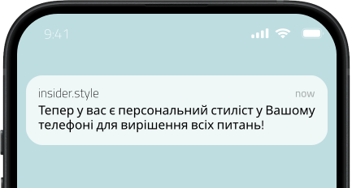
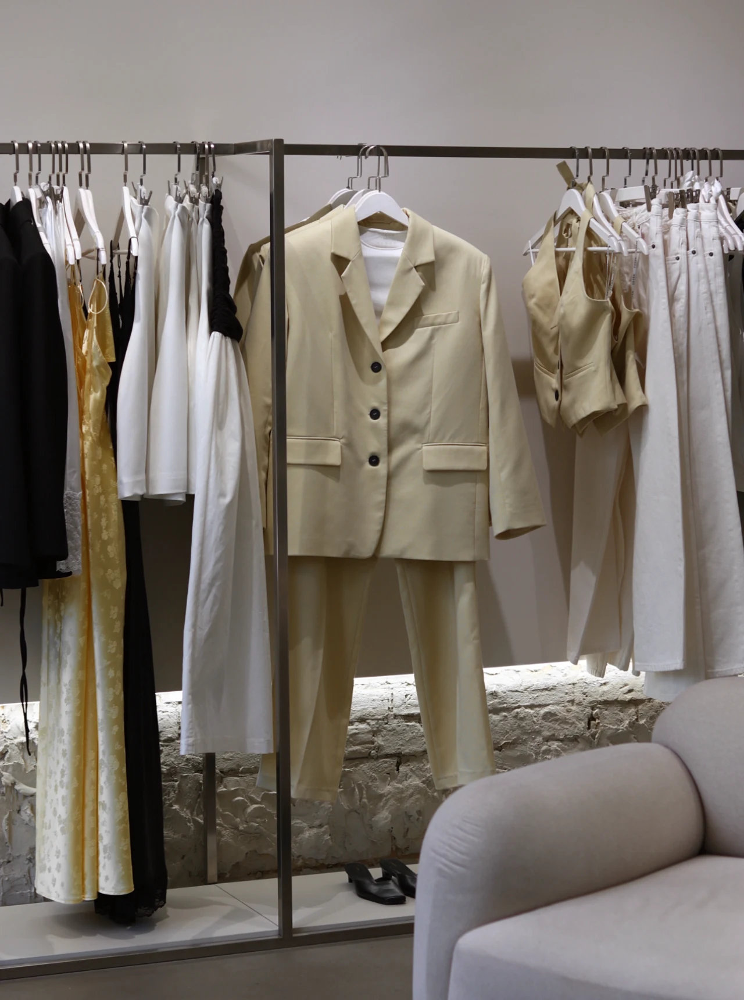
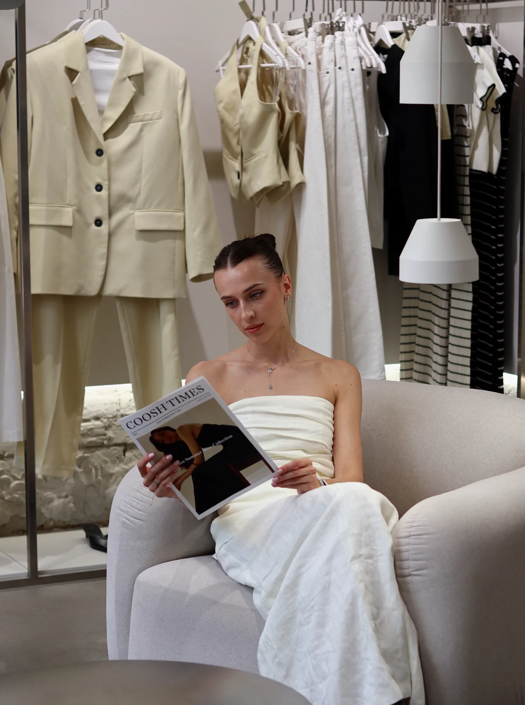
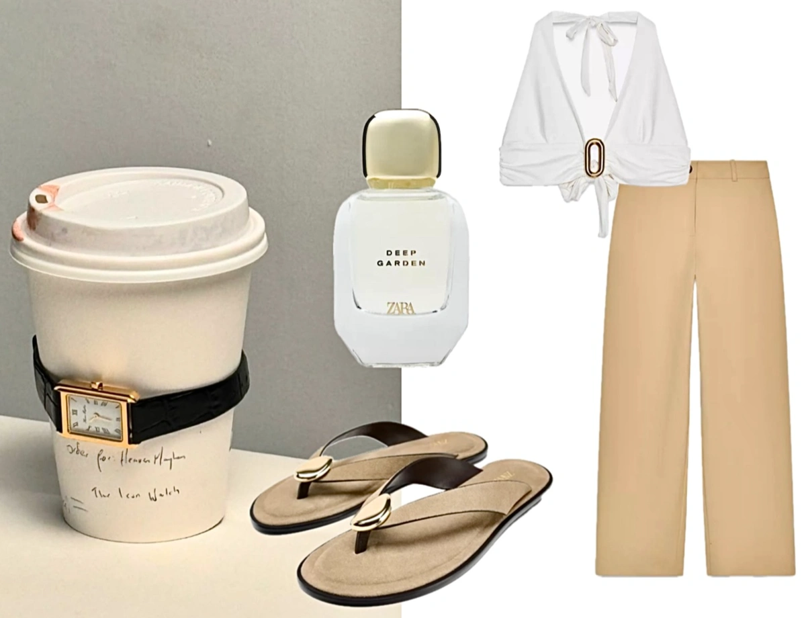
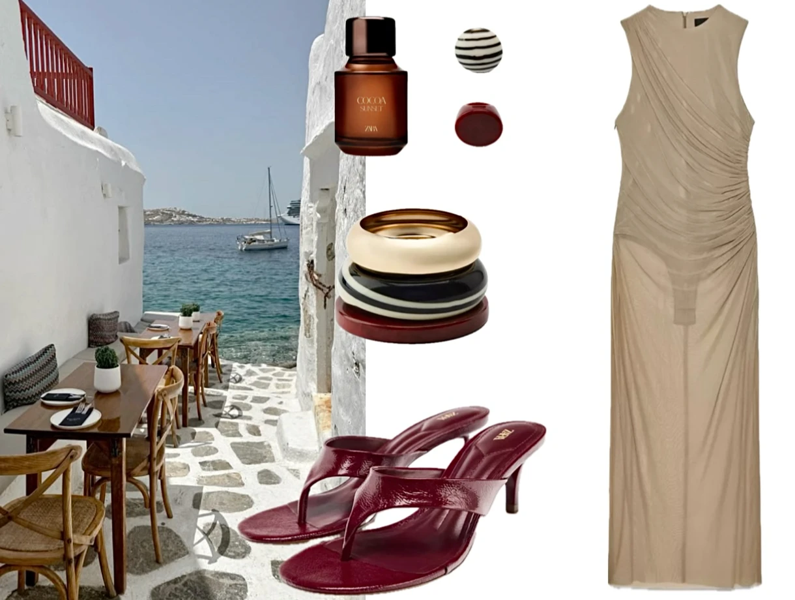
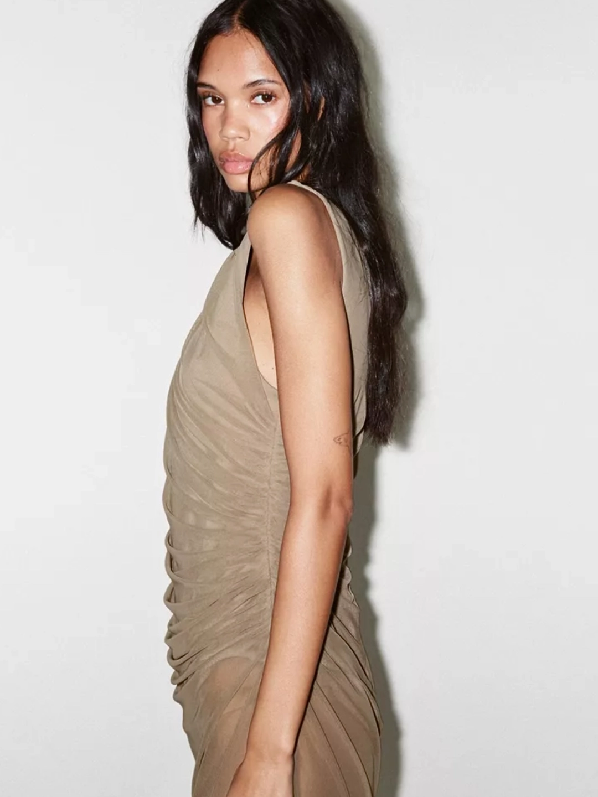

Закритий чат по стилю
Старт 14.07
Створи гардероб, що робить тебе впевненою щодня
І крок за кроком навчить виглядати стильно, впевнено та доречно в будь-якій ситуації


Цей курс для тебе, якщо:
01
Не хочеш витрачати багато — але хочеш виглядати стильно
02
Збираєш образи в Pinterest, але не знаєш, як це повторити в реальності
03
Часто чуєш «тобі це не пасує», але не знаєш, що пасує
04
Любиш шопінг, але купуєш речі, які не носиш
05
Хочеш навчитися підбирати речі під свою фігуру та кольоротип
06
Годинами стоїш біля дзеркала і не знаєш що вдягнути
Я створила програму, яка допоможе тобі зрозуміти себе через стиль


- Теми розбиті по тижнях — щоб не перевантажуватись, а впевнено рухатись у своєму темпі
- Короткі відеоуроки (від 3 до 20 хв), які можна переглядати будь-коли
- Пояснення на простій мові, без пафосу, з реальними прикладами образів
- Практичні завдання — ти не просто слухаєш, а одразу пробуєш на собі
- Поради, підбірки та огляди українських брендів і масмаркету
- Рекомендації, які завершують образ: зачіски, макіяж, аксесуари
Стиль — це не про гроші,
а про вміння бачити та поєднувати!


Ти отримаєш образи «як на Pinterest», але не відірвані від реальності,
а адаптовані під тебе, твої потреби, смаки та бюджет
Навчу бачити потенціал у речах і поєднувати їх так,
щоб кожен твій вихід був впевненим та естетичним

Час виглядати так як ти завжди хотіла
МЕНІ ДОВІРИЛИ СВІЙ СТИЛЬ ЗІРКИ ШОУ БІЗНЕСУ
Анастасія Цимбалару, Злата Огнєвіч, Анна Кошмал, Любава Грешнова та інші
Програма курсу
Тиждень 1 — З чого починається стиль
- З чого почати, якщо гардероб «живе своїм життям»
- Психологія стилю: як зовнішнє впливає на внутрішнє
- Визначаємо свій кольоротип
- Пояснення як буде працювати чат
Тиждень 2 — Фігура та стиль
- Як правильно визначити свій тип фігури
- Що пасує саме тобі: фасони, довжини, силуети
- Огляди українських брендів, що враховують різні типи фігур
- Візуальні приклади: «стильно / не стильно»
Тиждень 3 — Масмаркет без помилок
- Як знаходити якісні речі в масмаркеті
- Огляди популярних брендів та лінійок (Massimo Dutti, Zara, Mango та інші)
- Речі, які виглядають дорожче, ніж коштують
- Як міксувати масмаркет з локальними брендами
Тиждень 4 — Аксесуари, взуття та сумки
- Як аксесуари змінюють образ
- Тренди vs класика: що варто купувати
- Взуття: форми, фактури, як вибрати свою базу
- Сумки: топ-5 форм, які працюють завжди
Фінальний модуль + подарунки
- Запис лекції: зачіски та макіяж, які виглядають «дорого»
- Огляд трендів в б’юті, які варто інтегрувати в образ
- Візуальні приклади
- РОЗІГРАШ: Персональна консультація від мене
- БОНУС: міні-гайд «Легкий перехід з літа в осінь»
ЗІ МНОЮ ТИ ТРЕНУЄШ СМАК ТА ЗАКОХУЄШСЯ В СВІЙ ГАРДЕРОБ
Прямо зараз відкрито передзапис
Стань учасницею курсу, який змінює більше, ніж гардероб
Усе, що ти вкладеш у цей місяць — працюватиме для тебе роками!
1990₴
590₴
Знижка 70% 30.07.2025
FAQ
Чи підходить мені клуб, якщо я не дуже розбираюся в моді?
Так, саме для цього він і створений. Усе пояснюється простою мовою, з прикладами, щоб ти могла відчути результат навіть
без базових знань.
Як проходить навчання? Це онлайн-курс чи щось інше?
Навчання проходить у форматі закритого Telegram-чату. Щотижня ти отримуєш нові матеріали у зручному форматі — тексти,
добірки, приклади, відео + прості завдання, щоб закріпити знання.
Скільки триває доступ і чи треба щомісяця платити знову?
Доступ до клубу триває 1 місяць. Це не підписка — ти платиш один раз за участь і отримуєш повноцінний місячний
міні-курс.
Чим
Inside.style
відрізняється від простої підписки на Instagram-сторінку?
Це не просто контент — це система. Тут є послідовність, глибина, практичні завдання та пояснення. А ще — реальні
приклади й розбір ситуацій, які не побачиш в Instagram.
Чи можу я скасувати підписку, якщо мені не підійде?
Оскільки це не підписка, а одноразовий платіж — повернення не передбачене. Але ми впевнені: якщо пройдеш навіть половину
курсу, вже побачиш результат.
Я не з України — чи контент буде мені актуальний?
Так, усі поради універсальні й адаптовані під різні стилі життя та географію. Бренди, приклади, речі — підібрані так,
щоб працювали для будь-якого міста або країни.